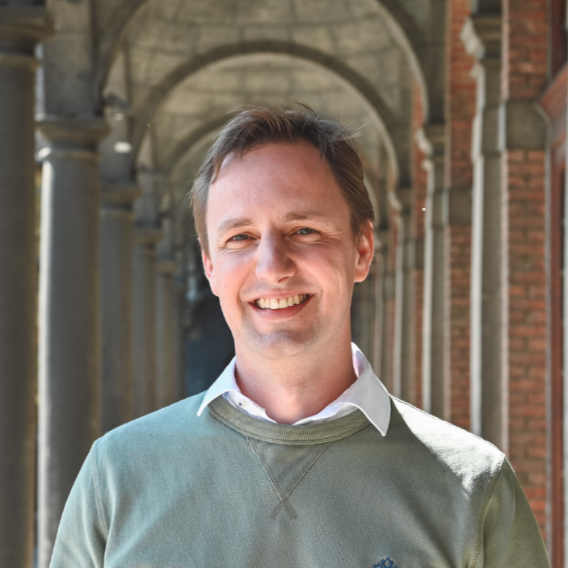

Associate Professor
UAntwerpen Business School - Faculty of Business and Economics · Antwerp, Belgium
I research optimisation models and algorithms to tackle tomorrow's challenges in the field of logistics and supply chain management.
Building upon my expertise in Operations Research & Supply Chain Management, I study multi-stakeholder interaction in supply chain collaboration, speed optimisation and vessel synchronization on inland waterways, data-driven optimisation of dynamic warehouses, circular supply chain models, and logistics optimisation in space.

News & Blog